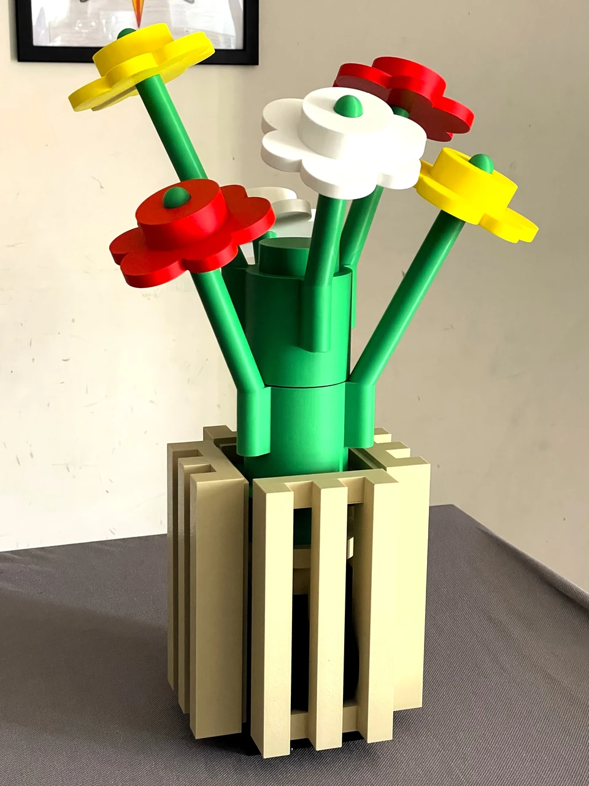

VARIAZIONE 1 · TOPVaso a Mattoncini (2 Steli)
L’edizione gigante completa da ~45 cm: nucleo SNOT nero, 4 pareti a doghe beige, doppio stelo impilato e 6 fiori personalizzabili.
- Altezza~450 mm
- Componenti15 pezzi (0 colla)
- Fiori6× intercambiabili